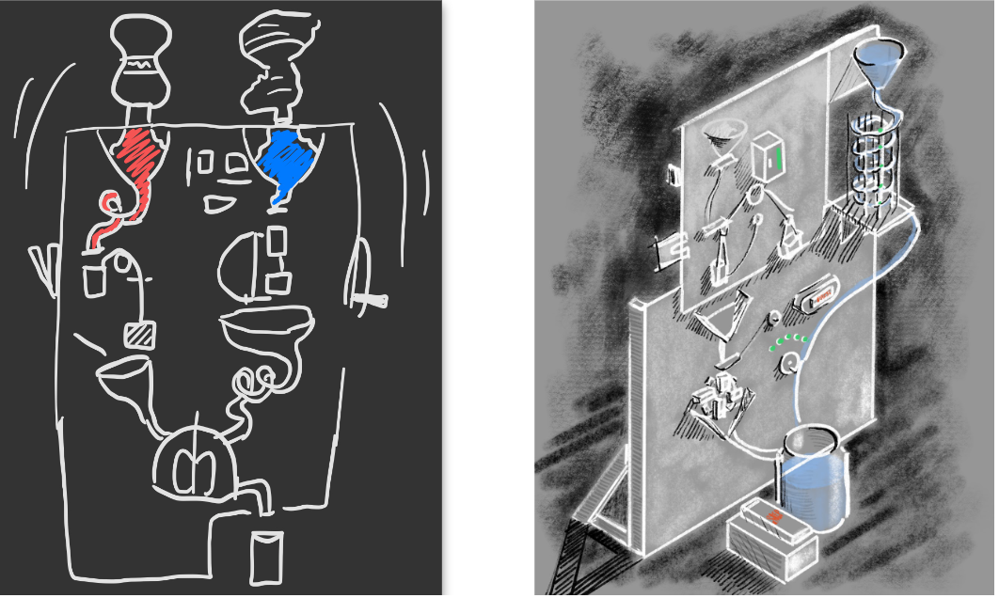

Latest Project
Kinetic Sculpture with the help of Arduino
How it all began
The idea was to create some sort of machine that would react without any direct input, this was a school assignment provided by our teachers. Therefore the project was conducted with a group of five students. Our journey began with a pitch for a kinetic sculpture that would react to noise pollution. It would react in the form of movement, similarly to how the Strandbeest (see figure 1) moves with the wind. This was a subject of brainstorm and prototyping movements for a couple of weeks, until we realised that this would be hard to implement and make interactive, since its input would be implicit interactions from noise. Instead we went down another route, and found enjoyment in exploring gear movements and how kinetic energy travels through gears. The time we spent here was not completely lost, but we felt like we needed a purpose for our gear sculpture - otherwise it would just be another gear sculpture you often see at Swedish technical museums. We wanted to make an inefficient machine out of a simple task, such as making coffee or juice. We landed on juice because we did not want to risk burning down our machine in the process of heating the coffee water.
How we moved on
We spent a lot of time designing and prototyping the juice machine, and play tested it using MDF and sand, since we did not want to consume the expensive plastic material until we had every module ready. The problem with this was that we did not get to test the essential taps that would hinder the water and juice to flow until very late in the process. Once we had printed out the modules in plastic we realised that the taps leaked, a lot. This demanded a change, quick, to make the machine still meaningful and valuable. Since we had tested with sand in the initial prototypes, and this worked, we wanted to change the water and juice to a material resembling sand. Thus, we chose salt, and to have only one long tube containing the water, without hold-ups. A machine that makes salt water! In an inconvenient, inefficient and impractical way. Yet it has brought laughter and joy to the people who have seen it and tested it.
What approach did we take?
With our playful and inconvenient machine we wanted to explore notions such as inefficiency, impracticality and enjoyment. We wanted to work with inefficiency because we wanted to explore unconventional ways to create design. We wanted to make a simple everyday task go a bit slower and demand the users attention. Therefore we came to explore the notion of impracticality as well. The machine is impractical because there are much faster ways of making saltwater. But we also realised that this inefficient and impractical tool to make saltwater sparked enjoyment and laughter. We saw a resemblance of our machine to Rube Goldberg machines, which are also popular despite being impractical and inefficient at performing its end-goal.
How does it work?
Module 1: Increasing and decreasing the amount of salt with the wheel.
The user then needs to press the button to initialise opening & closing of tap.
Salt travels to the first reservoir and stays until user interacts with module 2.
Module 2: In order to open the tap and fill the cup below so it weighs more than the counterweight the user needs to squeeze a soft ball of fabric just right, not too hard and not too soft.
If you manage to squeeze just right, the tap will open and fill the cup for as long as you can keep this pressure.
When the cup weighs more than the counter- weight it will sink down towards the funnel.
To tip the cup the user will step on a pedal to wind up the string attached to the underside of the cup.
When the user stops pressing the pedal the string will unwind and the cup will be lowered to its standing position again.
Module 3: Crank the wheel on the right side of the module and watch the lights turn on.
Crank more than 5 times and the lights will turn off, making the user having to repeat the sequence.
The amount of lights turned on dictates the amounts of opening & closings the tap will make, i. e. how many cups it will fill & empty.
When the user is done with their cranking they should press the button displayed on the only still picture.
This will initialize the tap & wheel sequence.
The user should have to repeat this module, as well as the weight off module, several times in order to empty all salt.
Module 4: The blender.
When all salt & water has gathered in the blender, you have salted water ready for your pasta.
Technical Aspect
In order to have all the moving parts functioning, we were forced to use some sort of electronics. This was conducted by using Arduino boards which are micro boards which allows the user to program functions or specific sequences on to the board. The function or sequence is then conducted depending on what sort of input the programmer has opted for. Arduino uses C++ as language and could be quite challenging at times. For more information regarding the code please head on over to my github.
View Code